항공전자정비기능사 (2003-03-30 기출문제)
1과목: 임의 구분
1. PA 장치(passenger address system)의 설명으로 옳은 것은?
- 지상무선국이 특정의 항공기와 교신하고 싶을 때 불러내는 장치이다.
- 테이프 재생 장치에 의하여 음악을 방송하며 방송에 우선 순위가 있다.
- 조종실 내에서 운항 승무원간의 통화 연락을 할 때 사용한다.
- 비행중 조종실과 객실 승무원 간의 통화장치이다.
(정답률: 알수없음)

2. 조종실 음성기록장치(CVR : Cockpit Voice Recorder)에 있는 무한 테이프(endless tape)는 몇분전 것 까지의 내용을 녹음 하는가?
- 15분
- 30분
- 45분
- 60분
(정답률: 알수없음)
3. 항공교통관제(ATC) 중 계기 방식에 의해 비행하는 항공기 및 특별관제공역을 비행하는 항공기에 대한 관제는?
- 항로관제(Air route traffic control)
- 진입관제(Approach control)
- 착륙유도관제(Final approach control)
- 비행장관제(Aerodrome control)
(정답률: 알수없음)
4. 발신국에서 기준 신호와 가변 위상 신호를 포함한 VHF 전파를 발사하여 항공기에서 수신장치로 수신함으로서 방위를 항공기에게 부여할 수 있는 장치는?
- 자동방향 탐지기(ADF)
- 초단파 전방향식 무선표지(VOR)
- 무지향성 무선표지(NDB)
- 무선항로 표지장치(Radio Range Beacon)
(정답률: 알수없음)
5. 항공기가 항법사 없이도 장거리 운항을 할 수 있다. 이때 꼭 필요한 장치는?
- 관성항법 장치(INS)
- 쌍곡선 항법 장치(LORAN)
- 항공 교통응답 장치(ATC)
- 거리 측정 장치(DME)
(정답률: 알수없음)
6. 관성 항법 장치(INS : Inertial Navigation Sys.)의 구성으로 옳지 않은 것은?
- 고도계(Altimeter)
- 모드 선택기(Mode Selector)
- 자이로 기준장치
- 조작 및 지시기(Control Panel)
(정답률: 알수없음)
7. 외측 마아카 비이콘(outer marker beacon)의 변조신호 주파수는 몇[Hz] 인가?
- 3,000
- 1,300
- 400
- 100
(정답률: 알수없음)
8. 항공기용 컴퓨터시스템에서 자체의 고장여부를 쉽게 파악하여 고장 내용을 결정하는 시설을 의미하는 것은?
- ATE
- MWS
- BITE
- ASTU
(정답률: 알수없음)
9. YAW Damper system 의 목적이 아닌 것은?
- YAW Damping 을 억제한다.
- 선회시에 선회율(Rate of turn)을 정하여 준다.
- Localizer Beam에 의하여 항공기가 활주로 중앙선으로 착륙케 한다.
- 항공기 중심으로 부터 전후의 흔들림이 있을 시에 미세한 조정을 한다.
(정답률: 알수없음)
10. 각종 대기상태 자료를 얻기 위하여 ADC(Air Data - Computer)로 들어가는 기본 입력신호는?
- 동압과 정압(Static and pitot pressure)
- 대기의 온도 및 밀도(Air temperature and density)
- 대기속도 및 정압(Air speed and static pressure)
- 동압 및 온도(out side temperature)
(정답률: 알수없음)
11. 계기 착륙 장치에 의한 착륙 진입 중에 조종사 진입을 계속할 것인가 아니면 상승(GO AROUND)할 것인가의 정해진 고도를 무엇이라 하는가?
- 결심고도
- 기압고도
- 비행고도
- 절대고도
(정답률: 알수없음)
12. 선택된 방식(MODE)으로 비행기가 조종되고 있을 때, 표시기에 나타나는 색깔은?
- 붉은색
- 녹색
- 흑색
- 호박색
(정답률: 알수없음)
13. 항공기에서 사용되는 대역의 전파는 주로 무슨 전리층에서 반사되는가?
- D1층
- D2층
- E층
- F층
(정답률: 알수없음)
14. UHF 송신기에서 수정 발진기의 주파수를 원하는 주파수로 얻기 위해서 사용하는 것은?
- 전단 증폭기
- 완충 증폭기
- 전력 증폭기
- 체배기
(정답률: 알수없음)
15. SSB 통신 방식과 AM 통신 방식을 비교한 설명으로 옳지 않은 것은?
- AM의 대역폭보다 1/2로 좁아진다.
- AM보다 훨씬 적은 전력으로 같은 질의 체배를 할 수있다.
- AM보다 무변조 시 출력 소비 전력이 적다.
- AM보다 혼신 및 페이딩에 약한 것이 흠이다.
(정답률: 알수없음)
16. 와이어안테나는 결빙 발생을 최소화하기 위하여 비행 중 최소 몇 도를 넘지 않도록 해야 하는가?
- 20°
- 30°
- 40°
- 50°
(정답률: 알수없음)
17. 기상 레이더에 사용되는 주파수 대역은?
- C와 X밴드
- C와 S밴드
- S와 L밴드
- L와 P밴드
(정답률: 알수없음)
18. 다음은 전파 고도계의 설명이다. 옳은 것은?
- FM형은 높은 고도에 사용한다.
- 펄스형은 낮은 고도에 사용한다.
- 4300㎒대의 주파수를 사용하며 1200㎒대로 주파수 변조한다.
- 주로 FM형의 것을 사용한다.
(정답률: 알수없음)
19. 안테나의 특성 그림이다. 합성지향 특성은?
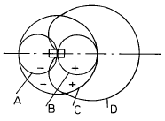
- A
- B
- C
- D
(정답률: 알수없음)
20. 자동조종장치 중 기체의 동요를 억제하기 위하여 제동신호를 검출하는 레이트가 있는 것은?
- 센서부
- 서보부
- 제어부
- 컴퓨터부
(정답률: 알수없음)
2과목: 임의 구분
21. 기록장치와 경고장치 중 각종 자료를 기록, 사고를 해독하기 위하여 파라미터의 수를 샘플링하여 기록하는 장치는?
- 디지털 비행자료 기록장치(DFDR)
- 비행자료 집적 기록장치(AIDS)
- 조종실 음성 기록장치(CVR)
- 비행자료 경고장치(DFWS)
(정답률: 알수없음)
22. 비행자료 집적 기록장치의 파라미터 중 플랩, 스포일러가 속하는 파라미터는?
- 항법파라미터
- 조종파라미터
- 비행파라미터
- 엔진파라미터
(정답률: 알수없음)
23. 기록장치와 경고장치 중 항공기 시스템에 대하여 조종사가 즉각 그 사태를 인식하지 않으면 안되는 이상이 발생되었을 경우는?
- 경고
- 주의
- 충고
- 조언
(정답률: 알수없음)
24. 착륙 및 관제장치에서 진입영역이 넓고 곡선 진입이 가능한 착륙장치는?
- 마이크로파 착륙유도장치(MLS)
- 계기착륙장치(ILS)
- 위성항법장치(GPS)
- 관성항법장치(INS)
(정답률: 알수없음)
25. 방향탐지기(ADF)에서 사용되지 않는 안테나는?
- 루프안테나
- 센서안테나
- 접시형안테나
- 고니오미터
(정답률: 알수없음)
26. 100[V]의 전압에서 5[A]의 전류가 흐르는 전기다리미를 3시간 사용하였다. 이 다리미에서 소비된 전력량은 얼마인가?
- 1[KWh]
- 1.5[KWh]
- 2[KWh]
- 3[KWh]
(정답률: 알수없음)
27. 어느 코일의 전류가 0.⑤[sec] 사이에 2[A] 변화하여 기전력 2.4[V]를 유기하였다고 하면 이 회로의 자기 인덕턴스[H]는 얼마인가 ?
- 0.03
- 0.06
- 0.042
- 0.24
(정답률: 알수없음)
28. 전류에 의한 자계의 방향을 결정하는 것은?
- 플레밍의 우수법칙
- 앙페르의 오른나사법칙
- 렌쯔의 법칙
- 플레밍의 좌수법칙
(정답률: 알수없음)
29. 지름에 비하여 매우 긴 솔레노이드가 있다. 권회수는 1[m]마다 50회 감겨 있고 1[A]의 일정전류가 흐른다면 솔레노이드 내부자계의 세기는?
- 5000/2π [AT/m]
- 5000[AT/m]
- 50[AT/m]
- 50/2π [AT/m]
(정답률: 알수없음)
30. 단면적 S [m2], 길이 ℓ [m]인 도체의 저항이 R [Ω ]일때, 이 도체의 고유저항 ρ 는?
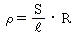
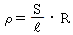
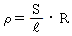
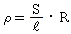
(정답률: 알수없음)
31. 평행판 전극에 일정 전압을 가하면서 극판 간격을 2배로하면 내부 전장의 세기는?
- 4배
- 3배
- 2배
- 1/2 배
(정답률: 알수없음)
32. RL 직렬회로에서 L = 5[mH], R = 10[Ω]일 때, 이 회로의 시정수는 몇 [sec]인가?
- 20 x 10-4
- 15 x 10-4
- 10 x 10-4
- 5 x 10-4
(정답률: 알수없음)
33. 10[Ω]의 저항 10개를 직렬로 접속할 때의 합성저항은 병렬로 접속할 때의 몇 배인가?
- 10
- 20
- 100
- 200
(정답률: 알수없음)
34. 다음 중에서 비유전율이 가장 큰 것은?
- 유리
- 고무
- 에보나이트
- 산소
(정답률: 알수없음)
35. 그림과 같은 회로가 공진하고 있을 때, 전 임피던스[Z]는 얼마인가?
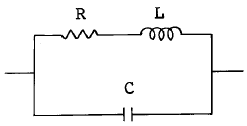
- R
- CR
- CR/L
- L/CR
(정답률: 알수없음)
36. 그림과 같은 회로의 명칭은?
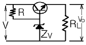
- 병렬형 전류제어회로
- 직렬형 전압제어회로
- 병렬제어형 정전압회로
- 직렬제어형 정전압회로
(정답률: 알수없음)
37. 이상적인 연산증폭기의 조건으로 옳지 않은 것은?
- 대역폭이 1 이다.
- 입력 임피던스가 ∞ 이다.
- 출력 임피던스가 0 이다.
- 전압이득이 -∞ 이다.
(정답률: 알수없음)
38. 어떤 증폭기에서 입력전압을 10mV로 변화시켰더니 출력전압이 10V 변화하였다. 증폭기의 이득은 몇 dB 인가?
- 58
- 60
- 66
- 76
(정답률: 알수없음)
39. 부성저항 발진회로는?
- CR발진회로
- LC발진회로
- 수정발진회로
- 터널다이오드발진회로
(정답률: 알수없음)
40. 어떤 회로에 구형파를 입력에 넣은 결과, 그림과 같이 파형이 일그러져 출력에 나타났을 때 ①부분을 무엇이라고 하는가?
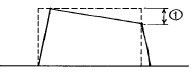
- 링깅
- 언더슈트
- 새그
- 오버슈트
(정답률: 알수없음)
3과목: 임의 구분
41. 그림과 같은 슈미트트리거 인버터의 출력파형은? (단, 입력은 정현파이다.)
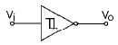
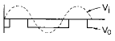
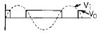
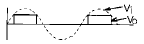
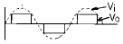
(정답률: 알수없음)
42. 그림과 같은 회로를 논리회로에 이용하려고 한다. 어떤 논리회로인가?
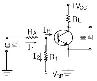
- NAND회로
- OR회로
- NOT회로
- NOR회로
(정답률: 알수없음)
43. 부울 대수식
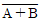
와 같은 것은?- A
- B
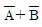
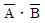
(정답률: 알수없음)
44. 트랜지스터의 특성에 대한 설명으로 틀린 것은?
- 소전압 소전력에 동작한다.
- 소형이며, 경량이다.
- 온도변화에 잘 견딘다.
- 기계적으로 견고하며, 수명이 길다.
(정답률: 알수없음)
45. 과변조한 전파를 수신하면 어떤 현상이 생기는가?
- 음성파가 많이 일그러진다.
- 검파기가 과부하로 된다.
- 음성파 전력이 작아진다.
- 음성파 전력이 크게 된다.
(정답률: 알수없음)
46. 반도체의 여러 현상에 대한 효과가 아닌 것은?
- 홀효과
- 펠티어효과
- 제에백효과
- 쇼트키효과
(정답률: 알수없음)
47. 브리지 정류회로의 특징이 아닌 것은?
- 변압기 2차권선의 중간 탭이 필요 없다.
- 다이오드의 첨두 역내전압이 반으로 줄어든다.
- 출력전압이 전원의 2배가 된다.
- 정류소자의 수가 2배 필요하다.
(정답률: 알수없음)
48. 트랜지스터 증폭기의 hfe=50, IB=20㎂, 1/hoe=2kΩ 일 때, 출력전압은 몇 V 인가?
- 0.2
- 1
- 2
- 3
(정답률: 알수없음)
49. 피측정량과 일정한 관계가 있는 몇개의 서로 독립된 양을 측정하고, 그 결과로부터 계산에 의하여 피측정량을 구하는 방법은?
- 직접 측정법
- 간접 측정법
- 편위법
- 영위법
(정답률: 알수없음)
50. 그림과 같은 파형이 오실로스코프에 나타났을 때 위상은 어떻게 되는가?
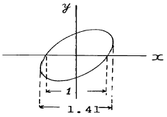
- 동위상
- 45°
- 90°
- 180°
(정답률: 알수없음)
51. 오실로스코프로 파형 관측시 시간축 톱니파를 피측정전압에 동기시키는 이유는?
- 파형을 크게 하기 위하여
- 파형을 선명하게 하기 위하여
- 파형을 밝게 하기 위하여
- 파형을 정지시키기 위하여
(정답률: 알수없음)
52. 직류와 교류를 같은 눈금으로 측정할 수 있는 정밀급계기이지만 외부 자계의 영향을 받기 쉬운 계기는?
- 가동철편형 계기
- 가동코일형 계기
- 전류력계형 계기
- 정전형 계기
(정답률: 알수없음)
53. (-)방향의 전류에 대해서는 무한대 저항이고, (+)방향의 전류에 대해서는 저항값이 0인 저항을 가져야 하는 특성을 가진 것은?
- 증폭기
- 검파기
- 위상기
- 전류 측정기
(정답률: 알수없음)
54. DC 전용으로 쓰이면서 균등 눈금인 계기는?
- 회로시험기 전압계
- 가동코일형 전압계
- 정전형 전압계
- 회로시험기 저항계
(정답률: 알수없음)
55. P형 진공관 전압계의 구성부가 아닌 것은?
- 정류부
- 증폭부
- 전원부
- 발진부
(정답률: 알수없음)
56. 레벨계의 눈금이 있는 회로계로 전압을 측정하였더니 10[dB]였다. 이 때의 전압은? (단, 레벨계는 저주파를 600[Ω]의 저항에 가하여 1[mW]를 소비할 때의 전압을 기준으로 한다. )
- 0.24[V]
- 2.4[V]
- 24 [V]
- 240[V]
(정답률: 알수없음)
57. 10[㏁]의 고 절연물을 측정하는데 적당한 측정법은?
- 코올라우시 브리지법
- 전압강하법
- 직접편위법
- 휘이스토운 브리지법
(정답률: 알수없음)
58. 교번 자속과 맴돌이 전류의 상호 작용을 이용한 계기는?
- 전류력계형 계기
- 유도형 계기
- 가동철편형 계기
- 가동코일형 계기
(정답률: 알수없음)
59. 계수형 주파수계에서 각 부의 오동작 유曺무를 확인하는 회로는?
- 리셋(Reset) 회로
- 표시시간 조정회로
- 자기 교정회로
- 게이트 시간 절환회로
(정답률: 알수없음)
60. 정현파와 구형파 발진기에서 정현파가 만들어진 상태에서 구형파를 출력하기 위하여 사용되는 회로는?
- 적분 회로
- 미분 회로
- 필터(Filter) 회로
- 시미트 트리거(Schmitt trigger) 회로
(정답률: 알수없음)